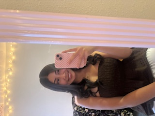

<!doctype html>
<html lang="en">

<head>
   <meta charset="utf-8">
   <title>Melissa's ART101 Homepage</title>
   <link href="site.css" rel="stylesheet" type="text/css">
</head>

<body>

   <div id="page">
      <!-- All visible page content goes between <body> and </body> -->

</body>

</html>

<h1>melissa's whimsy and cute website homepage <3</h1>

      <div class="top-selection">

         <div id="introduction">
            <h2>hihi im so happy you're here!!</h2>
            <p>
               i'm a second year here at ucsc and im majoring in psychology. i've been thinking of transferring to
               ucd and majoring in clinical nutrition. i live with my friends in a cute on-campus apartment. i'm working
               at
               oakes cafe and i love it. back home i worked at a chick-fil-a with my older sister. i'm the youngest of
               4 kids and i have 3 nephews and 1 niece. i have the sweetest boyfriend who worships the ground i walk
               on. life is pretty good. my favorite color is pink and my favorite animal is a penguin. something i miss
               from back home is my 2013 hyundai elantra. i never knew i could miss a car but we spent the whole summer
               together. she is my first car hehe. this year i've been enjoying cooking my own meals. there's been a
               lot of quesadillas made, but once i have the time to chef it up im really having a time with it.
            </p>
         </div>

         <div class="profile">
            <h2>soo this is what i look like:</h2>
            
         </div>

      </div>

      <div class="navigation">
         <h2>here are some fun facts about me:</h2>
         <ol>
            <li>i did ballet for 6 years</li>
            <li>i've been both a summer camp & science camp counselor</li>
            <li>i hate onions but love flying dutchmans from in-n-out</li>
            <li>i saw arctic monkeys on their last tour; here is a link to my fav song <a
                  href="https://www.youtube.com/watch?v=C4qJ4y-rDgs">https://www.youtube.com/watch?v=C4qJ4y-rDgs </a>
            </li>
         </ol>

         <h2>okk here are the important links:
            <ol>
               <a href="environ/env01.html">environ/env01.html </a>
               <a href="enviorn/env02.html">environ/env02.html </a>
            </ol>
      </div>
      </div>

      </body>

      </html>